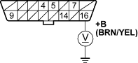
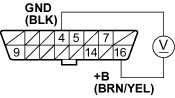
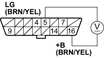

- Turn the ignition switch ON (II).
- Measure voltage between data link connector (DLC) terminal No. 16 and body ground.
DATA LINK CONNECTOR (DLC)

Terminal side of male terminals
Is there battery voltage?
YES - Go to step 3.
NO - Repair open in the wire between DLC terminal No. 16 and the No. 9 BACK UP (10A) fuse in the under-hood fuse/relay box. 
- Measure voltage between DLC terminal No. 4 and the No. 16.
DATA LINK CONNECTOR (DLC)

Terminal side of male terminals
Is there battery voltage?
YES - Go to step 4.
NO - Repair open in the wire between DLC terminal No. 4 and body ground.

- Measure voltage between DLC terminals No. 5 and No. 16.
DATA LINK CONNECTOR (DLC)

Terminal side of male terminals
Is there battery voltage?
YES - Go to step 5.
NO - Repair open in the wire between DLC terminal No. 5 and body ground.
- Measure voltage between DLC terminals No. 5 and the No. 7.
DATA LINK CONNECTOR (DLC)

Terminal side of male terminals
Is there 8.5 V or more?
YES - Go to step 10.
NO - Go to step 6.
- Turn the ignition switch OFF.